Manual Pengguna
Sistem One Page Report (OPR) untuk sekolah. Untuk admin sekolah, penyemak dan guru.
Versi November 2026 · opr.annurpro.com
1. Kenali Annur OPR
Annur OPR menggantikan templat OPR dalam Word, Canva atau Google Sheet. Guru isi satu borang, sistem menyusun PDF A4 yang seragam, penyemak menanda laporan telah disemak, dan admin nampak semua laporan sekolah di satu tempat.
Peranan
| Peranan | Siapa | Boleh buat |
|---|---|---|
| Admin utama | Akaun Google yang mendaftarkan sekolah. Data disimpan dalam Drive akaun ini. | Semua yang admin boleh buat, ditambah melantik admin lain, menyediakan dan menguji sambungan Google Drive. |
| Admin | Dilantik oleh admin utama, contohnya Penolong Kanan atau penyelaras. | Lihat semua laporan, semak, dashboard, eksport, tambah guru, tetapan. |
| Guru | Emel yang ditambah oleh admin. | Isi, simpan, hantar dan edit laporan sendiri. Guru nampak laporan sendiri sahaja. |
Keperluan
- Akaun Google (Gmail atau DELIMa) untuk setiap pengguna. Tiada kata laluan baharu.
- Pelayar moden: Chrome, Edge, Safari atau Firefox, di komputer atau telefon.
- Admin utama perlukan ruang storan Google Drive yang mencukupi untuk PDF dan gambar.
2. Mula cepat
- Admin buka opr.annurpro.com/daftar dan tekan Sambung dengan Google.
- Isi Nama sekolah, semak Pautan sekolah, tekan Daftar sekolah. Percubaan 14 hari bermula.
- Buka tab Tetapan: semak alamat, muat naik logo sekolah, simpan.
- Buka tab Guru: tampal senarai emel guru, tekan Tambah.
- Kongsi pautan
opr.annurpro.com/s/nama-sekolahdalam group WhatsApp guru. - Guru log masuk, isi borang dan tekan Hantar.
- Penyemak buka tab Laporan, tekan Semak dan muat naik PDF bertandatangan.
3. Daftar sekolah
Pendaftaran dibuat sekali sahaja oleh admin utama.
- Buka opr.annurpro.com/daftar.
- Tekan Sambung dengan Google dan pilih akaun admin. Google akan meminta kebenaran untuk Annur OPR menyimpan fail dalam Drive anda. Tekan Continue atau Teruskan.
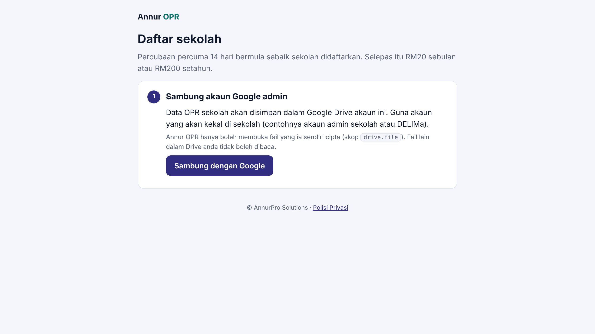
- Isi Nama sekolah. Pautan sekolah dicadangkan secara automatik. Anda boleh mengubahnya: huruf kecil, nombor dan sengkang sahaja.
- Tunggu sehingga status pautan menunjukkan Tersedia, kemudian tekan Daftar sekolah.
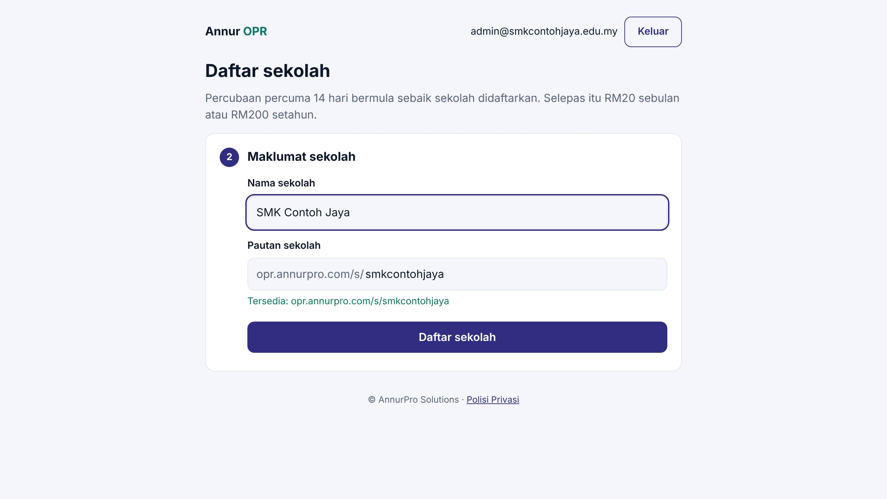
Sistem mencipta folder Annur OPR - nama sekolah dan sebuah Google Sheet dalam Drive anda, kemudian membuka halaman sekolah. Notis hijau di atas menunjukkan baki tempoh percubaan.
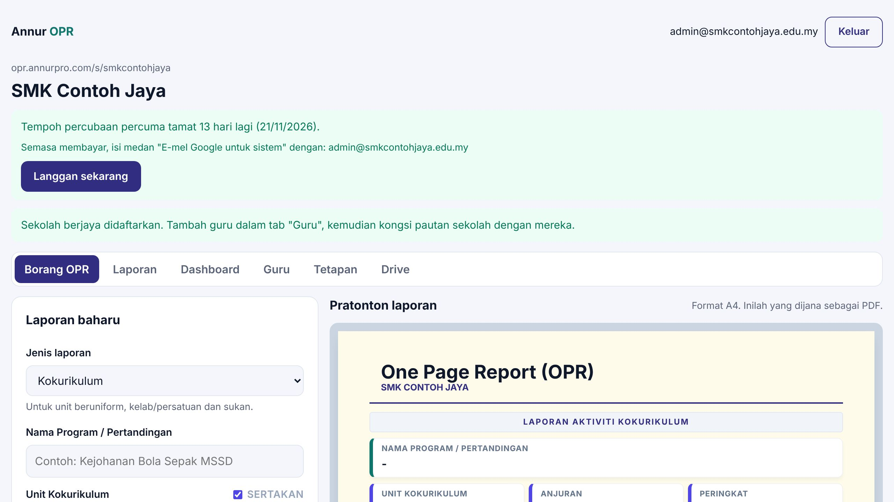
4. Tambah guru dan admin
- Buka tab Guru.
- Tampal senarai emel, satu baris seorang. Nama boleh ditulis selepas koma, contohnya
aminah@gmail.com, Cikgu Aminah. Anda boleh salin terus dua lajur dari Excel atau Google Sheet. - Pilih Sebagai guru (atau admin, untuk admin utama sahaja) dan tekan Tambah.
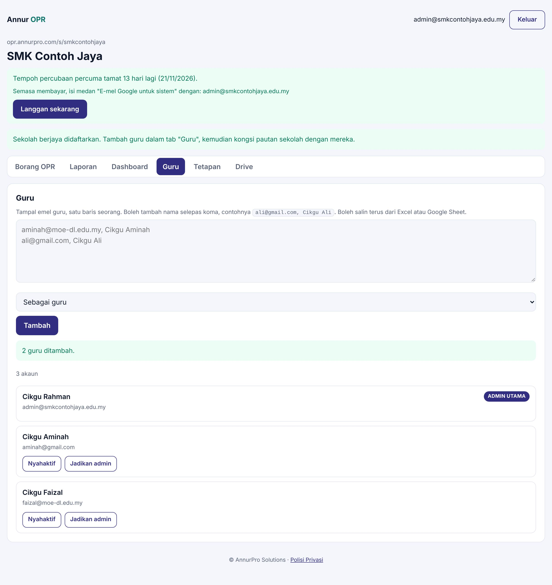
Butang di bawah setiap nama:
- Nyahaktif: guru yang berpindah tidak lagi boleh log masuk. Laporan lama mereka kekal. Tekan Aktifkan untuk membuka semula.
- Jadikan admin / Jadikan guru: hanya admin utama boleh melantik atau menurunkan admin.
5. Log masuk (guru)
- Buka pautan sekolah yang dikongsi admin, contohnya
opr.annurpro.com/s/smkcontohjaya. Simpan pautan ini di skrin utama telefon untuk akses pantas. - Tekan Log masuk dengan Google dan pilih emel yang didaftarkan oleh admin.
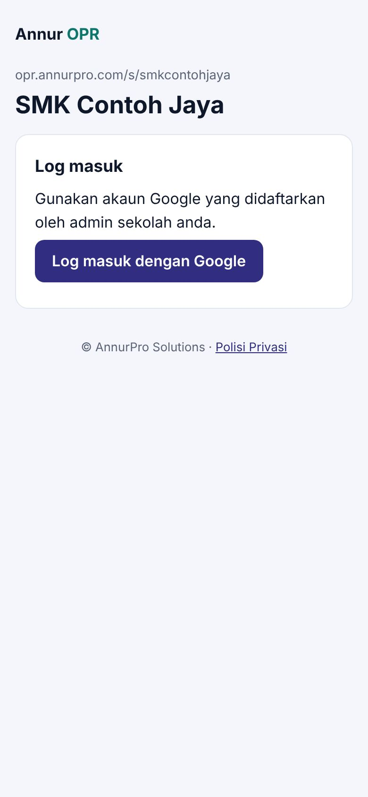
Jika muncul Akaun belum didaftarkan, emel itu belum ditambah oleh admin, atau anda log masuk dengan akaun Google lain. Lihat Masalah biasa.
6. Isi borang OPR
Tab Borang OPR dibuka secara automatik. Di komputer, borang di kiri dan pratonton A4 di kanan.
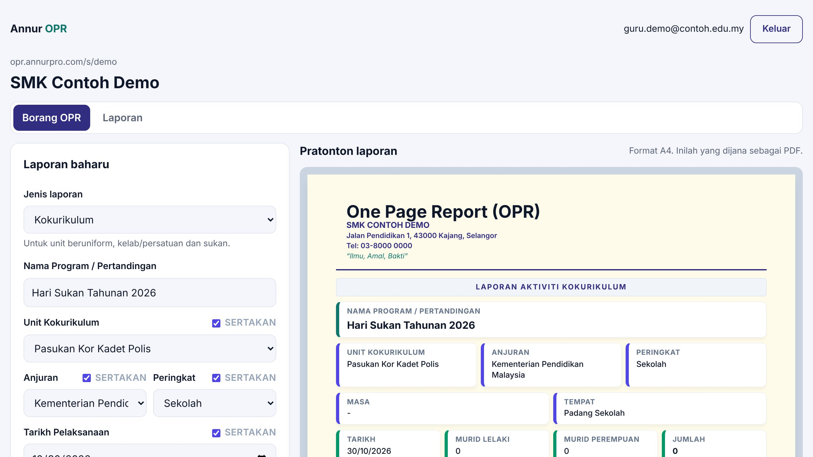
Medan borang
- Jenis laporan: Kokurikulum, Kelas, Event, Subjek, Akademik, Pentadbiran, HEM atau Guru Bertugas Mingguan. Label dan senarai pilihan berubah ikut jenis. Contohnya untuk Subjek, Unit menjadi Mata Pelajaran dan Peringkat menjadi senarai tingkatan.
- Isi Nama Program, unit, anjuran, peringkat, tarikh, masa, tempat dan bilangan murid. Jumlah murid dikira sendiri.
- Isi objektif, kaedah pelaksanaan, kekuatan, penambahbaikan dan rumusan mengikut keperluan.
- Di Pegawai pelapor dan pengesahan, nama anda diisi daripada akaun Google. Isi jawatan penyemak dan pengesah jika perlu.
Kotak Sertakan
Setiap medan ada kotak Sertakan. Nyahtanda untuk menyembunyikan medan itu daripada PDF, contohnya jika program tiada masa atau tempat tertentu. Ruang tandatangan juga dipilih dengan cara yang sama (Disediakan, Disemak, Disahkan).
Gambar dan PDF aktiviti
- Di Gambar / PDF aktiviti, pilih gambar dari galeri atau kamera, atau sebuah fail PDF.
- Isi keterangan ringkas (pilihan) dan tekan Tambah ke laporan.
- Ulang untuk gambar lain. Tekan Buang untuk mengeluarkan.
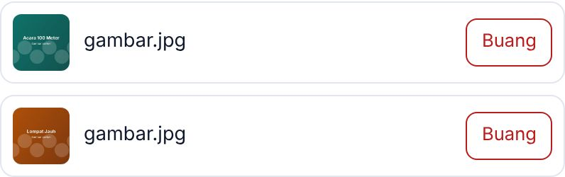
Di telefon
Di telefon, pratonton berada di bawah borang. Tekan butang terapung Lihat pratonton untuk melompat ke sana, dan Kembali ke borang untuk naik semula.
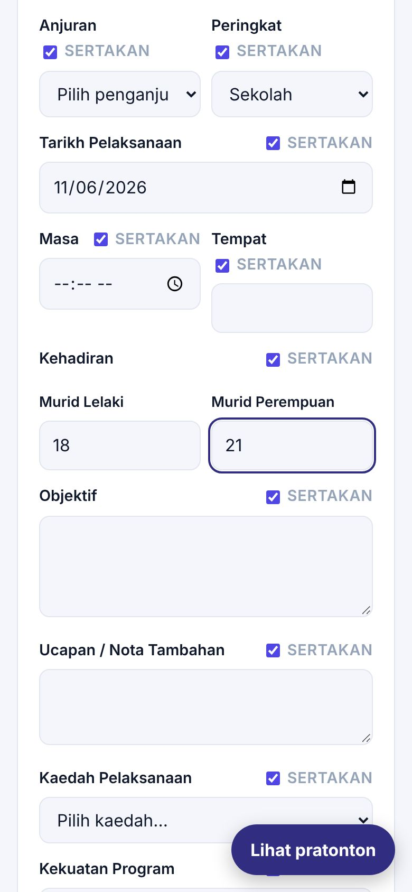
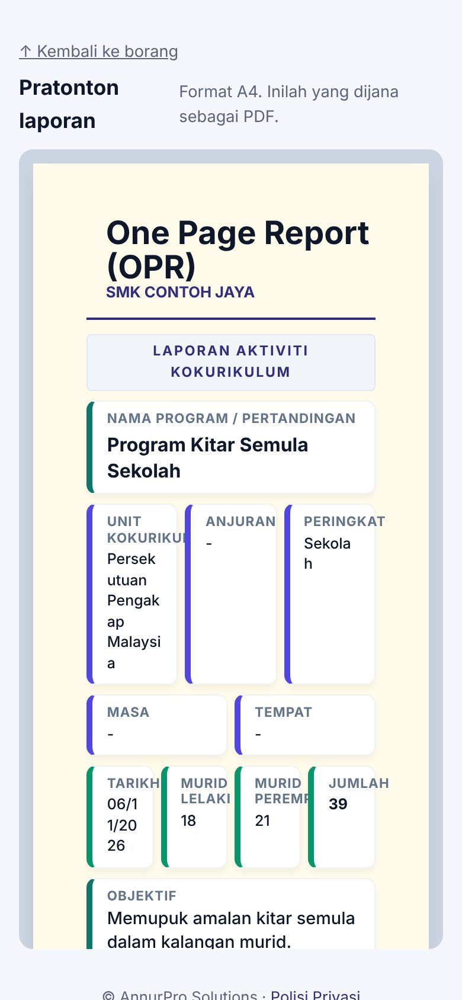
Simpan atau hantar
- Tanda kotak persetujuan notis PDPA (sekali untuk setiap laporan baharu).
- Tekan Simpan draf jika belum siap. Laporan berstatus DRAF dan boleh disambung kemudian.
- Tekan Hantar bila sedia untuk disemak. Status menjadi HANTAR.
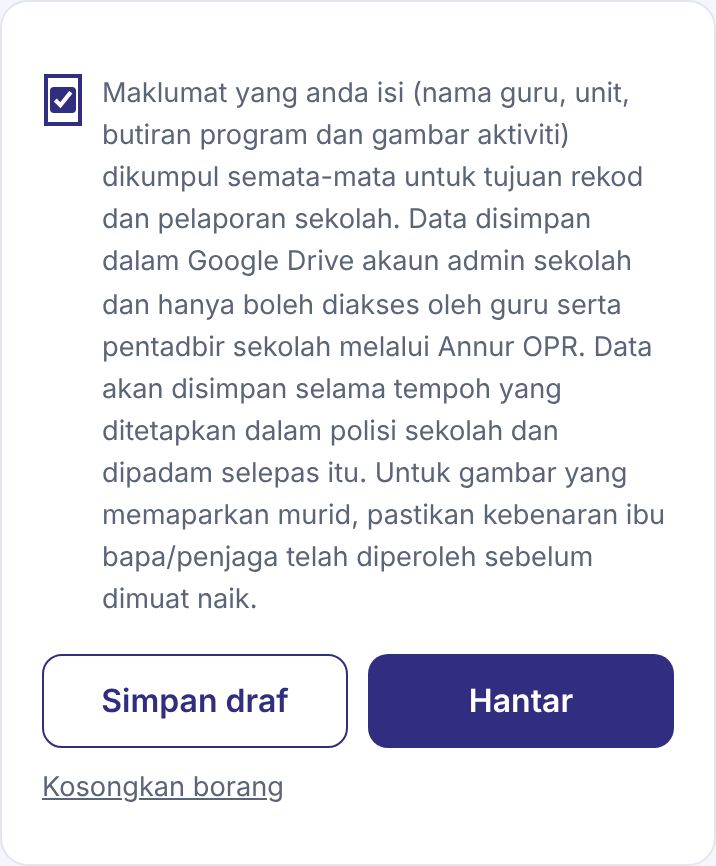
7. Pratonton dan PDF
Pratonton ialah rupa sebenar PDF yang akan dijana. Kepala surat (logo, nama sekolah, alamat, telefon, moto) datang daripada Tetapan sekolah.
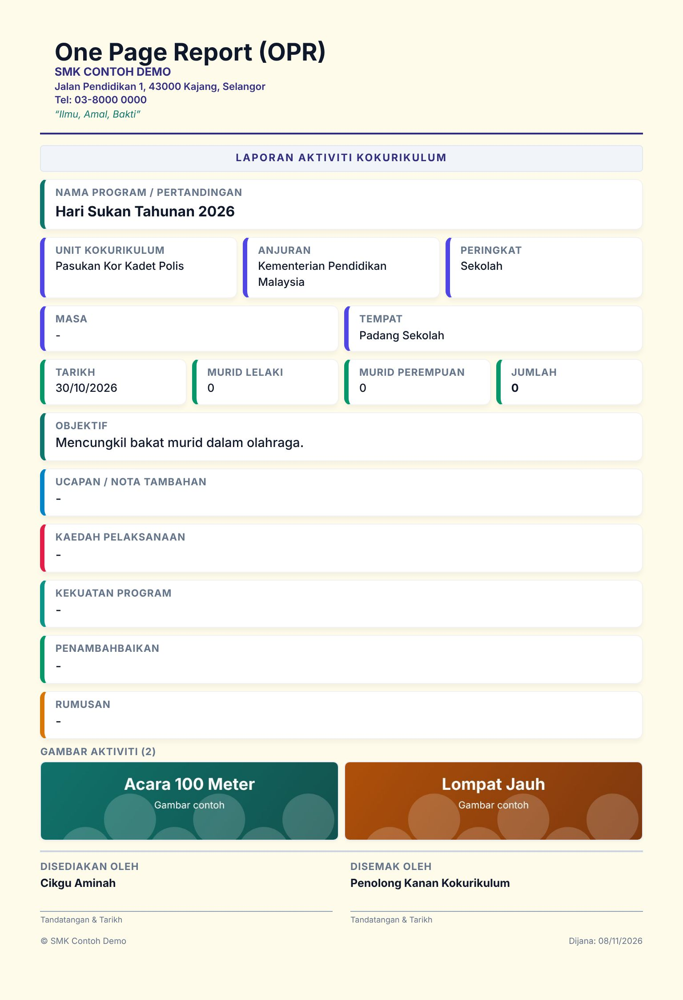
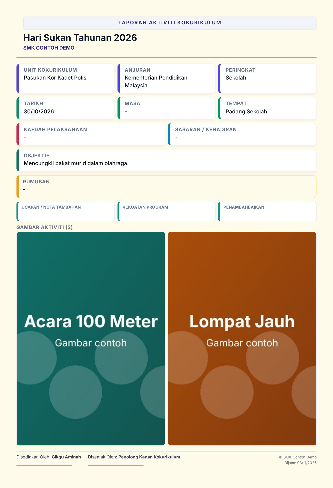
Rupa dokumen
- Gaya laporan: Kotak (standard) atau Poster.
- Warna kertas: pilih warna sedia ada atau warna sendiri.
- Susun atur gambar: Auto memilih bilangan lajur paling kemas ikut bilangan gambar.
- Logo tambahan (kaki PDF): logo unit atau penaja yang dimuat naik oleh admin.
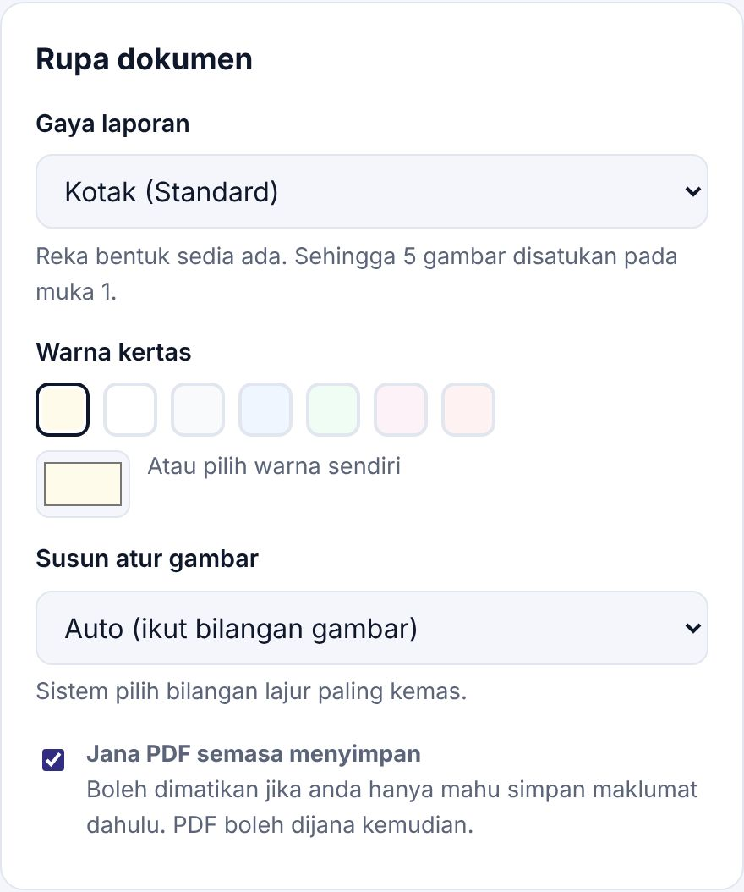
8. Senarai laporan
Tab Laporan menyenaraikan laporan, terbaru dahulu. Guru nampak Laporan saya, admin nampak Semua laporan. Tapis ikut jenis atau taip dalam kotak carian (tajuk, unit atau nama guru).
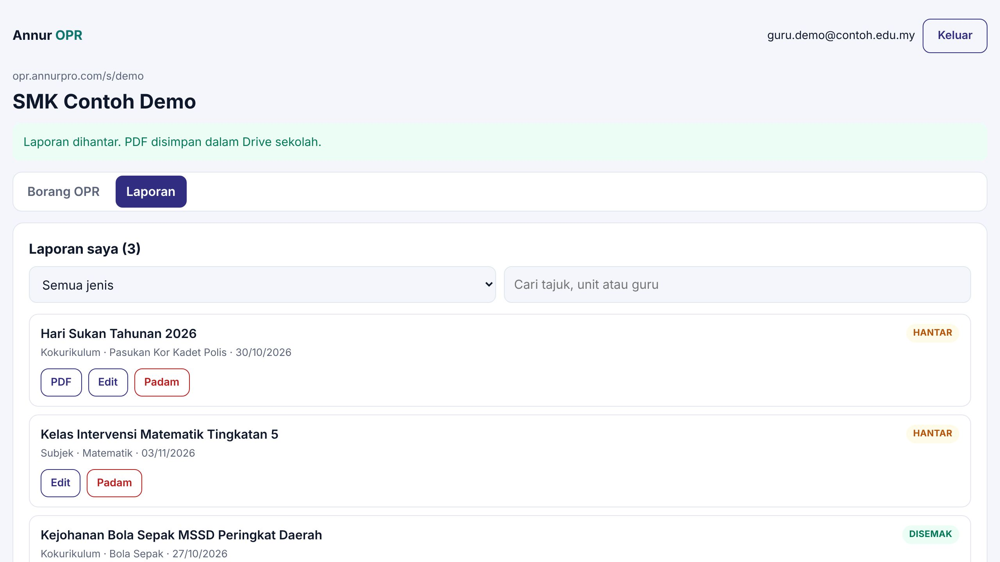
| Butang | Fungsi |
|---|---|
| Buka PDF yang dijana. | |
| PDF bertandatangan | Buka salinan bertandatangan yang dimuat naik penyemak. |
| Edit | Muatkan laporan ke borang. Gambar sedia ada dimuat semula. Simpan atau Hantar untuk mengemas kini laporan yang sama. |
| Padam | Padam laporan selepas pengesahan. |
| Semak | Admin sahaja. Lihat bab seterusnya. |
9. Semak laporan (admin)
- Buka tab Laporan. Laporan berstatus HANTAR menunggu semakan.
- Tekan PDF, cetak, tandatangan dan imbas (atau tandatangan secara digital).
- Tekan Semak pada laporan itu, pilih fail PDF bertandatangan.
- Tekan Muat naik & tanda disemak.
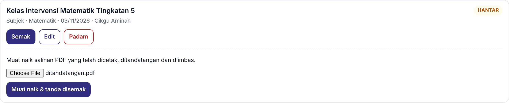
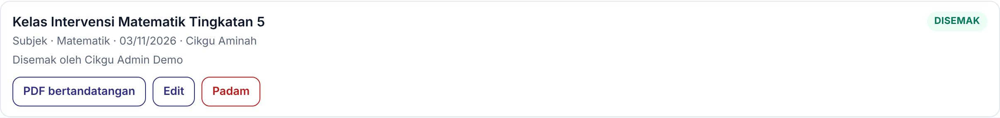
Jika sekolah tidak memerlukan salinan bertandatangan, tukar PDF bertandatangan wajib semasa semakan? kepada Tidak dalam Tetapan. Panel semakan kemudian memaparkan butang Tanda tanpa PDF.
10. Dashboard dan eksport (admin)
Tab Dashboard menunjukkan jumlah laporan, belum disemak, telah disemak, draf dan murid terlibat, serta carta laporan mengikut jenis, peringkat, unit, guru paling aktif dan bulan (12 bulan terakhir).
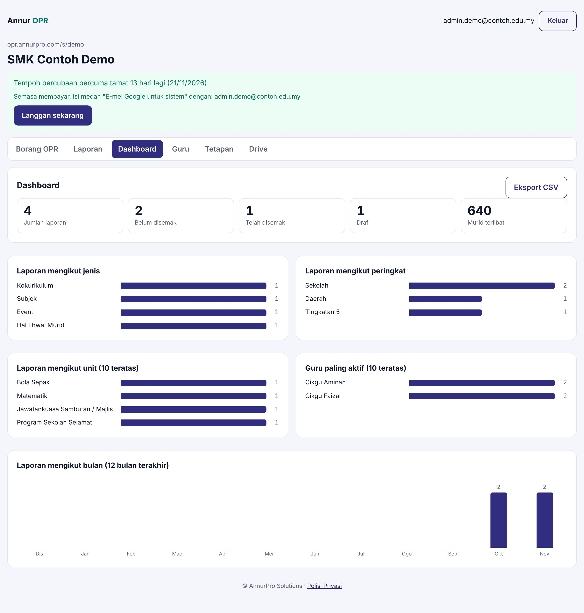
Tekan Eksport CSV untuk memuat turun semua laporan. Buka dalam Excel atau Google Sheets untuk mesyuarat, audit atau laporan tahunan.
11. Tetapan sekolah (admin)
Tab Tetapan ada empat bahagian. Tekan butang simpan di setiap bahagian selepas mengubah.
Identiti
- Nama sekolah, tajuk dokumen, alamat, telefon, faks, tahun sesi, moto dan nama pengetua: dipaparkan dalam kepala PDF.
- Jawatan penyemak dan pengesah lalai, teks kaki PDF dan awalan nama fail PDF.
- Warna: warna utama, kedua, aksen dan kertas.
- Dasar PDF: gaya dan susun atur lalai, sama ada PDF wajib, dan sama ada PDF bertandatangan wajib semasa semakan.
- Notis persetujuan PDPA: teks yang mesti dipersetujui guru sebelum menyimpan.
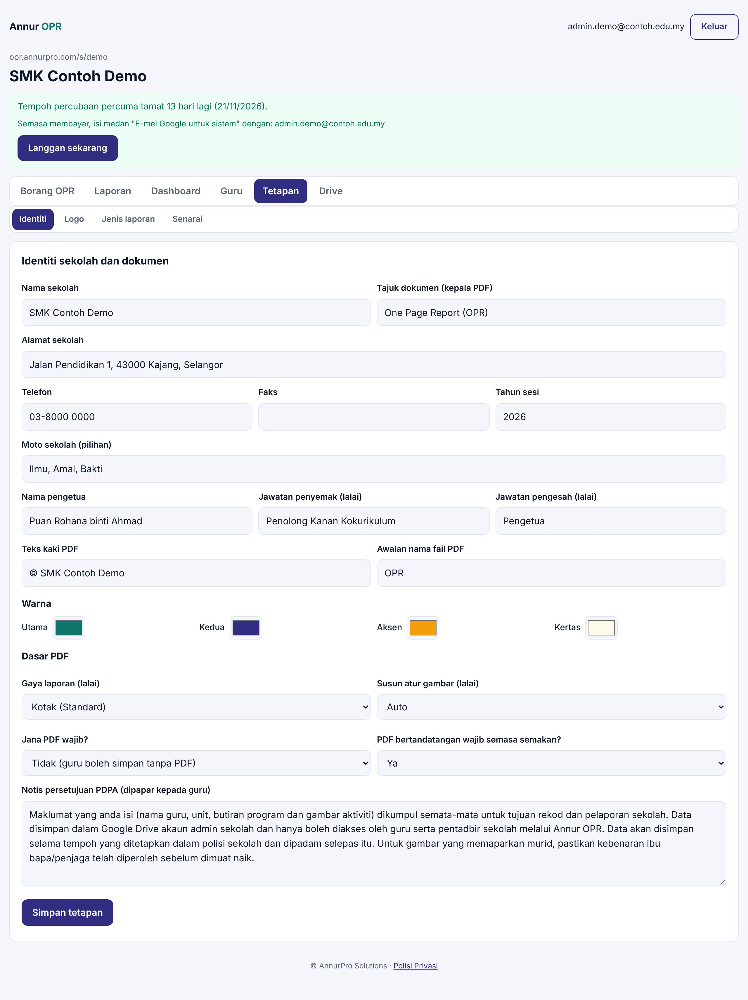
Logo
Slot 1 untuk logo sekolah (kepala PDF). Slot 2 pilihan di kepala. Slot 3 hingga 6 ialah logo tambahan yang guru boleh pilih untuk kaki PDF. Pilih fail, tekan Muat naik. Logo PNG berlatar telus paling kemas.
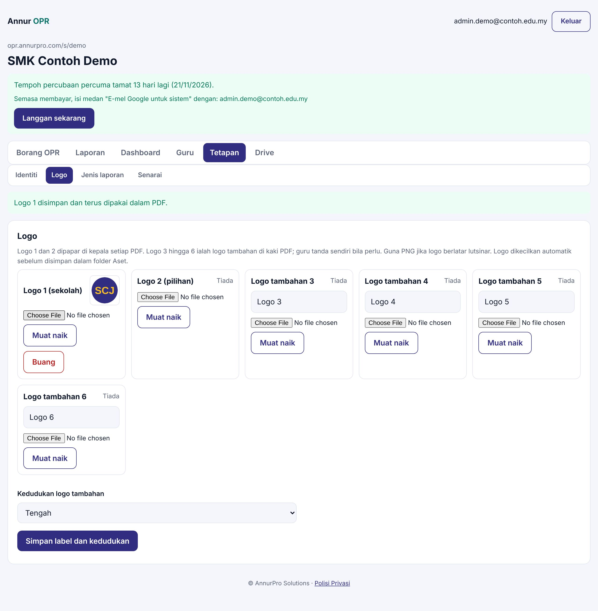
Jenis laporan
Matikan jenis yang tidak digunakan supaya tidak muncul dalam borang, tukar tajuk yang dicetak dalam PDF, dan pilih jenis lalai bila guru membuka borang. Tekan Simpan jenis laporan.
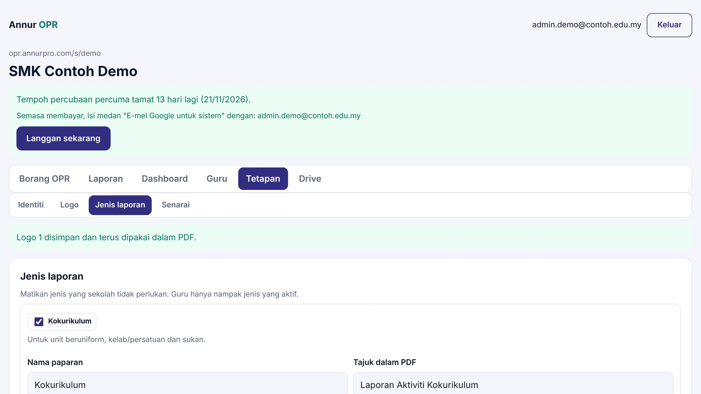
Senarai pilihan
Ubah item dropdown seperti unit kokurikulum, peringkat, anjuran dan tempat, satu item sebaris. Anda juga boleh mencipta senarai baharu.
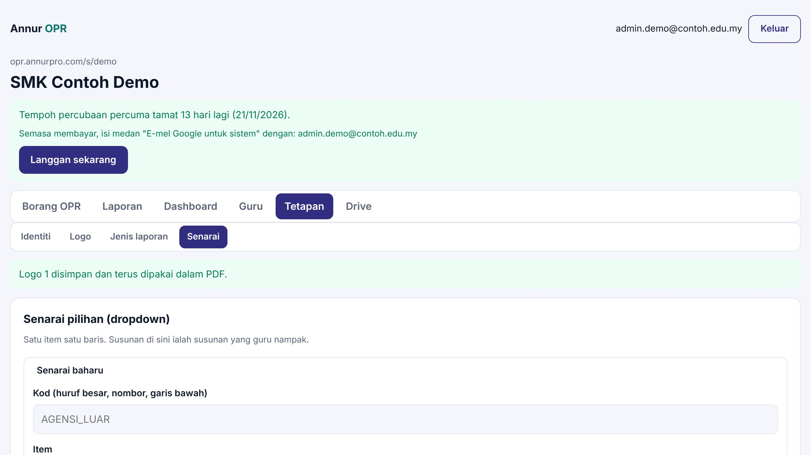
12. Google Drive sekolah
Tab Drive memaparkan pautan untuk guru, butang Buka Google Sheet, Buka folder Drive dan Uji sambungan Google Drive (admin utama).
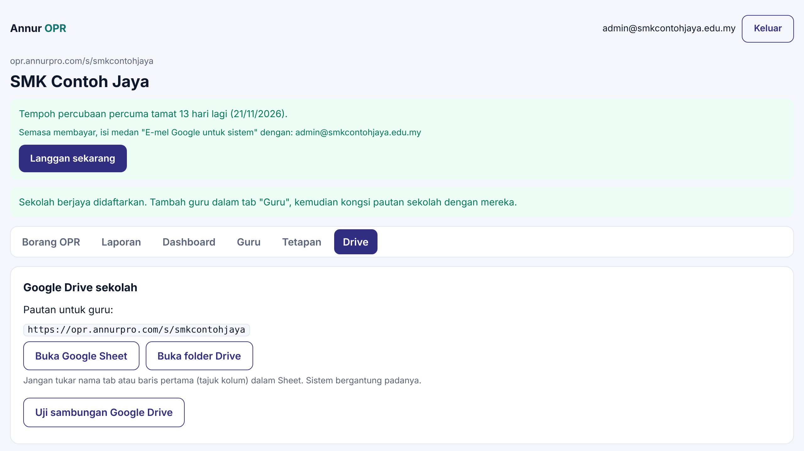
Struktur dalam Drive admin utama:
- Annur OPR - nama sekolah
- Laporan PDF: PDF yang dijana dan PDF bertandatangan.
- Lampiran: gambar aktiviti.
- Aset: logo sekolah.
- Google Sheet sekolah: tab Guru, Laporan, Senarai, Tetapan dan AuditLog.
Jika muncul mesej Sambungan Google Drive admin telah tamat atau dibatalkan (contohnya kata laluan Google ditukar atau akses dibuang), admin utama tekan Sambung semula Google Drive dan log masuk dengan akaun yang sama.
13. Langganan dan bayaran
| Pelan | Harga | Catatan |
|---|---|---|
| Percubaan | Percuma 14 hari | Bermula sebaik sekolah didaftarkan. Semua ciri. |
| Bulanan | RM20 sebulan | Satu harga seluruh sekolah, guru tanpa had. |
| Tahunan | RM200 setahun | Jimat RM40. |
Cara membayar
- Tekan Langgan sekarang atau Perbaharui langganan pada notis di halaman sekolah.
- Dalam borang bayaran BCL, pilih pelan bulanan atau tahunan. Kuantiti 2 bermaksud 2 bulan atau 2 tahun.
- Di medan E-mel akaun Google untuk log masuk, isi emel admin utama. Emel ini dipaparkan dalam notis.
- Bayar dengan FPX atau kad. Langganan dikemas kini secara automatik dalam beberapa minit.
Pembayaran sebelum tamat tempoh menambah masa dari tarikh tamat sedia ada, jadi tiada hari yang hilang.
Notis dalam aplikasi
- Semasa percubaan: baki hari dan tarikh tamat.
- 14 hari sebelum langganan berbayar tamat: peringatan untuk memperbaharui.
- Selepas langganan berbayar tamat: tempoh ihsan 7 hari, sistem masih berfungsi penuh.
Bila langganan atau percubaan tamat
- Laporan baharu tidak boleh disimpan dan tetapan tidak boleh diubah.
- Laporan sedia ada masih boleh dibuka, PDF boleh dimuat turun, dan data boleh dieksport.
- Tiada data dipadam. Semua fail kekal dalam Google Drive sekolah. Selepas bayaran, semua berfungsi semula.
14. Masalah biasa
| Masalah | Penyelesaian |
|---|---|
| "Akaun belum didaftarkan" | Admin belum menambah emel itu, atau anda log masuk dengan akaun lain. Tekan Keluar dan log masuk dengan emel yang didaftarkan, atau minta admin menambah emel anda. |
| "Akaun dinyahaktifkan" | Admin telah menyahaktifkan akaun anda. Hubungi admin sekolah. |
| "Access blocked" semasa log masuk dengan DELIMa | Sesetengah pentadbir Workspace KPM menyekat aplikasi luar. Guna akaun Gmail, atau minta pentadbir DELIMa membenarkan Annur OPR. |
| "Sistem belum sedia" | Admin utama belum melengkapkan penyediaan Drive. Admin utama buka tab Drive dan tekan Sediakan Google Drive. |
| Sambungan Google Drive tamat | Admin utama tekan Sambung semula Google Drive (bab 12). |
| Tidak dapat menyimpan, notis langganan merah | Langganan atau percubaan telah tamat. Admin perlu membayar (bab 13). Data masih selamat. |
| PDF lambat dijana di telefon lama | Kurangkan bilangan gambar atau guna gambar yang lebih kecil. Pastikan skrin tidak dikunci semasa menyimpan. |
| Medan tidak muncul dalam PDF | Pastikan kotak Sertakan medan itu ditanda dan medan tidak kosong. |
| Tidak boleh edit laporan | Laporan berstatus DISEMAK dikunci untuk guru. Minta admin. |
| Admin utama bertukar sekolah | Hubungi kami sebelum akaun itu ditutup. Pemilikan folder boleh dipindahkan kepada admin baharu. |
15. Privasi dan data
- Laporan, gambar dan PDF disimpan dalam Google Drive admin utama sekolah, bukan di pelayan AnnurPro.
- Annur OPR menggunakan skop Google
drive.file: ia hanya boleh membuka fail yang ia cipta sendiri. Fail lain dalam Drive tidak boleh dibaca. - Guru hanya memberi kebenaran emel dan profil asas untuk log masuk.
- Sekolah bertanggungjawab mendapatkan kebenaran ibu bapa sebelum memuat naik gambar murid, mengikut dasar sekolah.
Baca polisi penuh di opr.annurpro.com/privasi.
16. Video tutorial
Setiap video kira-kira satu minit. Tonton di opr.annurpro.com/panduan.
| # | Tajuk | Untuk |
|---|---|---|
| 1 | Daftar sekolah dan tambah guru | Admin |
| 2 | Isi laporan dari telefon | Guru |
| 3 | Borang OPR dan PDF A4 | Guru |
| 4 | Semak laporan | Admin, penyemak |
| 5 | Dashboard dan eksport | Admin |
| 6 | Tetapan sekolah | Admin |
17. Hubungi kami
AnnurPro Solutions
- WhatsApp: 011-2087 9149
- Emel: annurprosolutions@gmail.com
- Laman: opr.annurpro.com
Bila menghubungi kami, sertakan pautan sekolah, emel yang digunakan dan tangkapan skrin mesej ralat.
© AnnurPro Solutions. Gambar dalam manual ini menggunakan data contoh.